遊びで植物を育てよう
2020/04/05
ポポーに花がつきました。
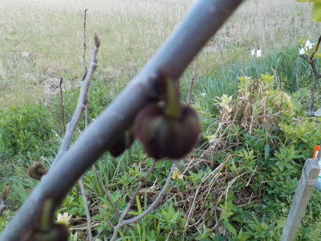
実生のポポーに初めての花がつきました。
ポポーの木は数本あるんですが、開花したのはこの1本だけなので受粉は無理のようです。
【ポポーTOP】 【果物TOP】 【園芸TOP】
2018/01/14
ポポーの植え替えに挑戦。
ポポーを地に植えているんですが、当初全部が育つと思っていなかったので株間を狭くして植えていました。
少し大きくなったので、間隔を広くするために植え替えしました。
ポポーの植え替えは難しいって本で読んだことがあったんですが、実際無理かも？って思いました。
木の根っこがゴボウみたいに真っ直ぐ下に生えてるんですね。
引っこ抜くことが出来ないので、根っこを切断するしか出来ませんでした。
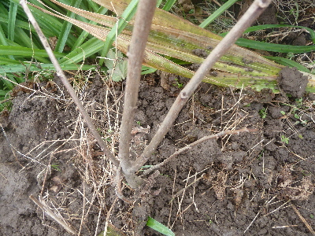
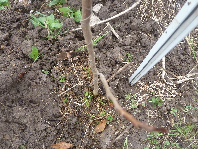
育ってくれるといいんですが、どうでしょうね。
【ポポーTOP】 【果物TOP】 【園芸TOP】
2015/09/27
鉢植えのポポーよりも地植えのポポーが育っていました。
ポポーの地植えは葉っぱが沢山です。
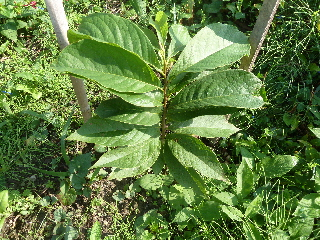
鉢植えのポポーはあんまり育っていなかったので、地植えにしました。
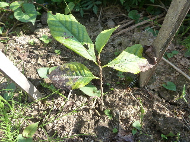
小さいでしょ。
始めから鉢植えにしなければ良かった。
【ポポーTOP】 【果物TOP】 【園芸TOP】
2015/04/25
枯れ木ポポーから芽が出ました。
ひょろひょろした枯れ木状態のポポーから芽が出て来ました。
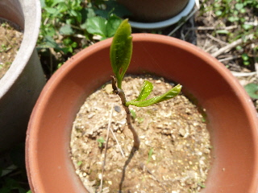
枯れていなくてよかった。
今年1年でどれくらい大きくなるかな？
【ポポーTOP】 【果物TOP】 【園芸TOP】
2014/11/16
ポポーの葉っぱが全部落ちました。
枯れ木みたい。
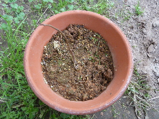
葉っぱ落ちると、存在感なくなりますね。
忘れてしまいそう。
春に葉っぱが出るタイミングで水やりが出来るかな？
【ポポーTOP】 【果物TOP】 【園芸TOP】
2014/11/08
ポポーは紅葉しているのかな？
はじめての冬なのでわからないですが、紅葉してる感じがします。
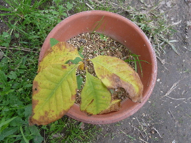
こんな小さい木が落葉しちゃったら寂しいだろうなー。
大きく育ったら綺麗なんだろうなー。
【ポポーTOP】 【果物TOP】 【園芸TOP】
2014/08/31
ポポーが大きくなったので、植え替えしました。
鉢いっぱいに育ったので、植え替えします。
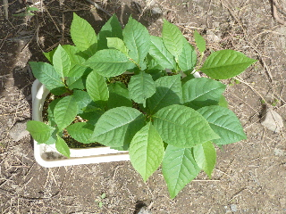
小さい鉢に何個も種を蒔いたので、窮屈そうです。
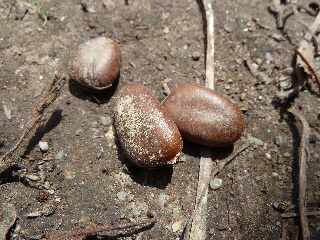
ポポーの種から双葉が出るのかと思っていたら、違っていました。
何だろう？種は栄養が詰まっているところで、そこから根っこや芽が出てくる感じかな？
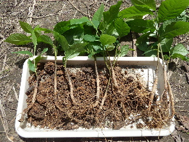
プランタから抜いたらこんな感じ。
根っこがごぼうみたい。
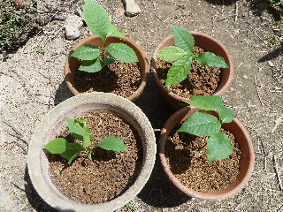
大きいものを4つ選んで鉢植えにしました。
早く育って食べれるといいなー。
【ポポーTOP】 【果物TOP】 【園芸TOP】
2014/07/28
ポポーの葉っぱがやっと出た。
ポポーの茎が出てから20日位経ちました。
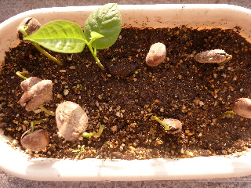
やっと1本葉っぱが出ました。
成長遅いなー。
他の種も育っているので、発芽率はとってもいいです。
何本育てるといいでしょうか？枯れることを考えると5本とかあった方がいいかな。
このペースで育つのが遅かったら、枯れる可能性も高そうです。
【ポポーTOP】 【果物TOP】 【園芸TOP】
2014/07/05
ポポーの茎が出てる！
4月に種まきしたポーポーですが芽が出ず、もうあきらめていたんですが、今日何か白いものが出ていました。
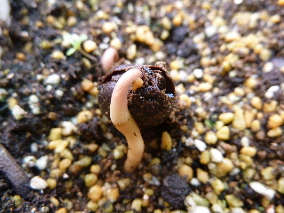
この白いのは茎ですよね？
根っこじゃないですよね。
なんか太くて力強い感じです。
双葉が出ないで茎があるのって、ちょっと格好悪いな。
でもまあ、育って良かった。
【ポポーTOP】 【果物TOP】 【園芸TOP】
2014/04/20
ポポーの種まき
冷蔵庫で保存していたポポーの種を出しました。
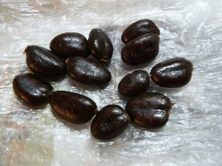
気温が暖かくなったので、そろそろ蒔いたら芽が出そうな気がします。
全部で12個です。
何個芽が出るかな？
これから水の管理を頑張ります。
【ポポーTOP】
【果物TOP】
【園芸TOP】
ポポーはクセがあるので沢山は食べれないな。
【おいしいものを食べよう。】【たくさん寝よう。】
【ソロ活をしよう!】【季節感のあることをしよう。】【動画視聴はほどほどに。】【当サイトの全てのコンテンツは無断転載禁止です。】